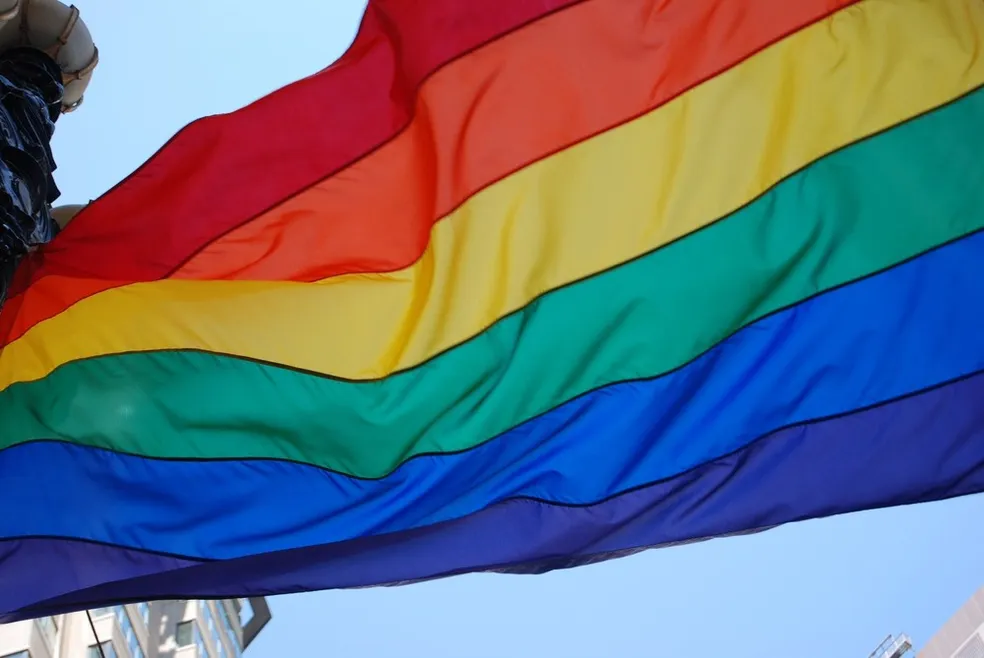

Descubra como a inclusão das novas letras "QIAPN+" na sigla LGBT fortalece a busca por representatividade.
A comunidade, que inicialmente era conhecida como GLS, atualmente abrange quase 10 letras e está receptiva para reconhecer novas expressões de diversidade sexual. Conforme apontado por especialistas, o movimento social vai além de ser apenas um rótulo, possibilitando que essa parte da população se identifique e se reconheça plenamente.
O texto discute a evolução da sigla LGBT para a sigla LGBTQIAPN+ e explora as diferentes letras e suas respectivas representações na comunidade. A sigla começou como GLS, representando gays, lésbicas e simpatizantes da causa homossexual. Com o passar dos anos, a sigla evoluiu para LGBT, incluindo também bissexuais, transexuais e travestis. Posteriormente, a sigla cresceu ainda mais para incluir outras identidades, resultando na forma atual: LGBTQIAPN+.
A socióloga Stela Cristina de Godoi explica que essa transformação reflete as mudanças sociais e a busca por representatividade. A sigla busca representar diferentes grupos por sua diversidade. A primeira parte da sigla se refere ao sexo biológico (feminino, masculino e intersexo), a segunda parte se refere à identidade de gênero (feminino, masculino, entre outros) e a terceira parte se refere à orientação sexual.
Após o "Q" de queer, a sigla incorpora conceitos trazidos pela teoria queer, que questiona as normas sociais e expande as possibilidades de interpretação do desejo, da sexualidade e da identidade. A teoria queer criticou a marginalização e a estigmatização das chamadas "minorias sexuais" e abriu caminho para novas nomenclaturas e entendimentos das identidades, reconhecendo que elas podem ser fluidas.
É importante ressaltar que essas nomenclaturas não devem ser vistas apenas como um glossário, mas como marcadores que ajudam a regular o funcionamento das instituições sociais. A sigla continua aberta a novas formas de diversidade, refletindo a natureza em constante evolução das identidades e dos conceitos de feminino, masculino e outros marcadores sociais.
O texto também destaca a importância da visibilidade e do reconhecimento das pessoas não binárias, que desafiam os rótulos de gênero tradicionais. Ao reconhecer as identidades não binárias dentro do espectro LGBTQIAPN+, busca-se dar visibilidade e afirmar a existência dessas pessoas, questionando as normas cisnormativas da sociedade.
Em resumo, o texto explora a evolução da sigla LGBT para LGBTQIAPN+ e discute a importância das nomenclaturas na representação e visibilidade das diversas identidades dentro da comunidade LGBTQIAPN+.